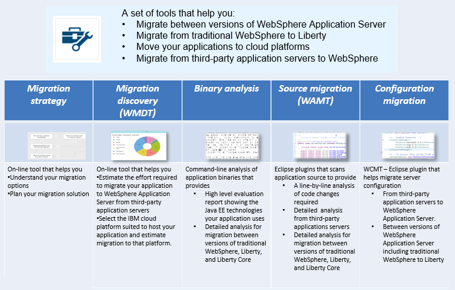

WebSphere Application Server Migration Toolkit
Go to WebSphere Application Server Migration Toolkit
The migration toolkit is ideal for speeding the migration of your applications from traditional WebSphere to WebSphere Liberty for modern containerized cloud deployments.
The migration toolkit provides Eclipse-based tools for WebSphere migration scenarios including Cloud migration, WebSphere version to version migration including WAS Liberty, and migration from third-party application servers.
The migration toolkit provides a rich set of tools that help you migrate applications from third-party application servers, between versions of WebSphere Application Server, to Liberty, and to cloud platforms such as Liberty for Java on IBM Cloud, IBM WebSphere on IBM Cloud and Docker.
The following tools are provided:
- Cloud Migration Tool
- WebSphere Version to Version Application Migration Tool
- Apache Tomcat to WebSphere Application Migration Tool
- JBoss to WebSphere Application Migration Tool
- Oracle to WebSphere Application Migration Tool
- WebLogic to WebSphere Application Migration Tool
- Apache Tomcat to Liberty Configuration Migration Tool
- WebSphere Configuration Migration Tool: JBoss
- WebSphere Configuration Migration Tool: WebLogic
- WebSphere Configuration Migration Tool: WebSphere to Liberty
